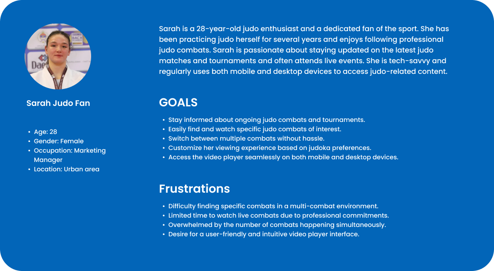
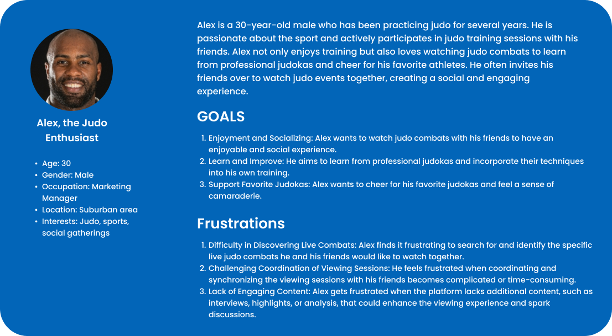
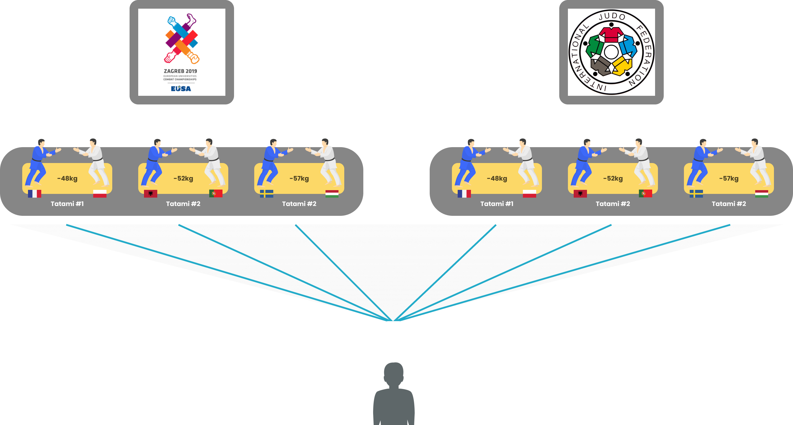
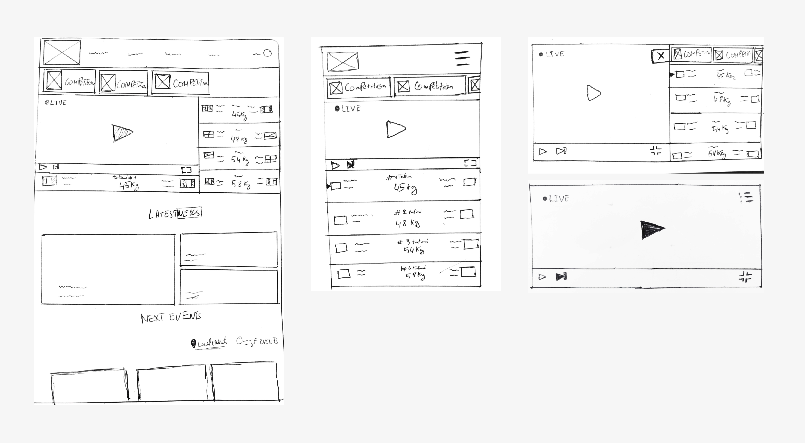
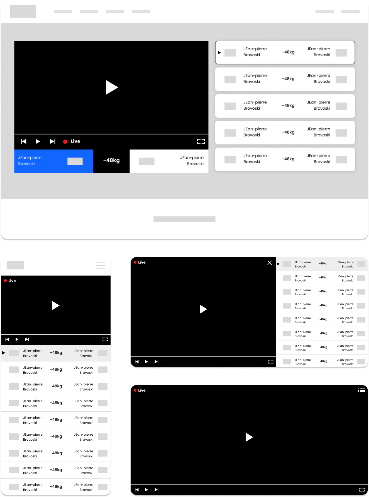
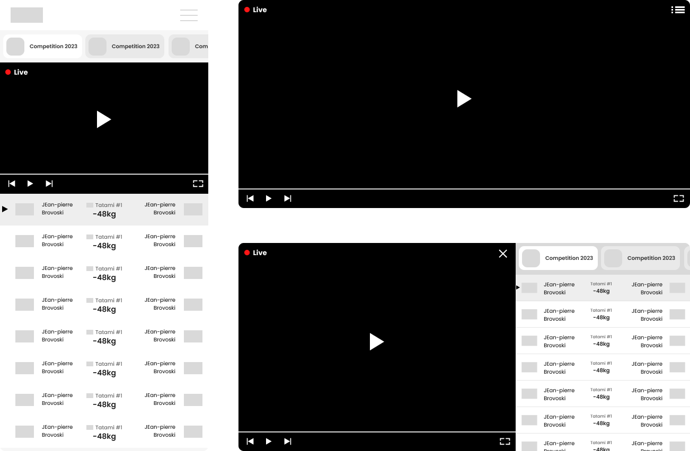
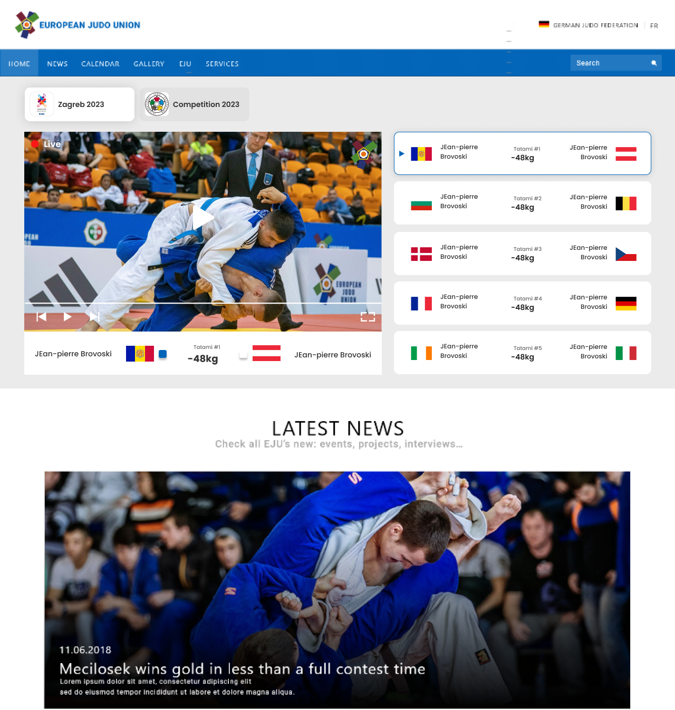

EJU.net is the official website of the European Judo Union (EJU). It serves as a comprehensive platform for judo enthusiasts, providing a wide range of information, resources, and services related to the sport.
The website offers updates on upcoming events, live judo stream videos, competition results, rankings, athlete profiles, news articles, and more.
It aims to promote and support the development of judo across Europe, connecting judo fans, athletes, coaches, and officials. With its rich content, EJU.net is a go-to destination for anyone interested in staying informed about the latest judo news, competitions, and developments within the European judo community.
The current live judo stream video player lacks user-friendly navigation options, making it challenging for users to switch between different combats happening simultaneously on both desktop and mobile devices. This leads to a frustrating user experience, as users struggle to find and watch the specific combats they are interested in, hindering their ability to enjoy and engage with the live judo matches effectively.
As part of a UX case study, I conducted four interviews with five individuals who have a keen interest in judo and regularly watch live judo competitions from EJU.NET. The primary goal of these interviews was to gain insights into their pain points and challenges when using the current EJU livestreams. The objective was to understand their needs and frustrations to identify opportunities for improvement in order to enhance their live streaming experience.
“I often had to click through a long list of combats to find the one I wanted to watch.”
“I wished there was a way to see an overview of all the combats happening at once."
“It will be better to have more information about Judo Combats instead of Combat 1.. as a title.”
"The country flags were too small to recognize, especially on mobile devices."
Based on the insights gathered from the interviews, two user personas were developed to represent the target audience of the EJU livestreams. These personas were created by analyzing the commonalities, preferences, and behaviors of the interview participants.
 Building on the research conducted through interviews and analysis of the current EJU livestreams, we recognized the need for a deeper understanding of judo combats and the key elements involved. To gain comprehensive insights and inform our user research, we attended a judo competition organized by EJU.
This hands-on experience allowed us to observe firsthand how judo combats are structured, the rules and regulations governing them, and the dynamics of multiple combats occurring simultaneously.
By immersing ourselves in the competition environment, we gained valuable knowledge about the intricacies of judo matches, the importance of recognizing judokas by name, weight classes, and national flags, and the challenges associated with efficiently managing multiple combats. This research field visit provided us with a solid foundation to develop a more informed and contextually relevant user experience for the live stream player, ensuring that the redesigned platform meets the specific needs of judo enthusiasts and facilitates seamless navigation between different combats in real-time.
we discovered several key elements related to judo combats and their context within a competition. Each combat is categorized based on weight classes, with one judoka wearing a blue uniform and the other wearing a white uniform.
The combats take place on specialized mats known as Tatamis. Furthermore, within a judo competition, there are multiple Tatamis, each hosting simultaneous combats.
This understanding of the weight categories, color differentiations, and the presence of multiple Tatamis during a competition is vital for designing an improved livestream player user experience that enables seamless navigation between combats happening in real-time.
In the context of judo competitions, it is common to have multiple events and numerous combats happening simultaneously. Therefore, it is essential to provide users with the flexibility to switch between competitions and navigate within each competition to access specific combats. This ensures that users can easily find and watch the matches of their interest, enhancing their overall viewing experience.
We started with pen and paper for quick wireframe sketches. Later, we used Figma for detailed wireframes and interactive prototypes to simulate user interactions and validate design concepts.
  I used Figma for visual design, creating interactive prototypes. After finalizing the designs, I proceeded with HTML and CSS integration for the implementation of the website, ensuring a seamless transition from design to development.

In this case study, our primary focus was to redesign the live judo stream video player, which was a crucial element of the website. However, it is important to note that the project involved working on various other elements of the website, including HTML and CSS integration.
By prioritizing the video player, we addressed the key challenges faced by users when navigating between multiple combats during live judo streams. Through user research, personas development, wireframing, and usability testing, we were able to iterate and refine the design to meet user needs.
The redesigned video player now offers seamless navigation between live combats, improved search and filtering options, and enhanced video playback performance. Additionally, social interaction features were incorporated to foster engagement and create a sense of community among judo enthusiasts.
Although this case study primarily focuses on the video player, it is important to acknowledge that our work extended to various other aspects of the website. These efforts aimed to ensure a cohesive user experience throughout the platform.
By addressing user pain points and enhancing the functionality and usability of the live judo stream video player, we have successfully improved the overall user experience of the website. The redesigned video player serves as a key component in providing an enjoyable and engaging platform for judo enthusiasts to watch and interact with live judo combats.